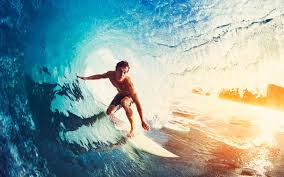
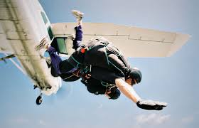

Os esportes radicais são as práticas desportivas que representam um grau elevado de risco físico que geram uma elevação da adrenalina,
seja por conta da altura, velocidade ou outros fatores presentes nessas atividades.
Embora sejam esportes que envolvam certo grau risco,
é possível adotar as práticas com medidas de segurança e aparelhos certificados.
Escalada
Surf
Paraquedas
